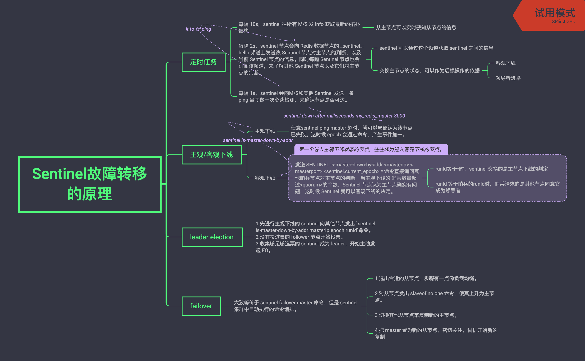
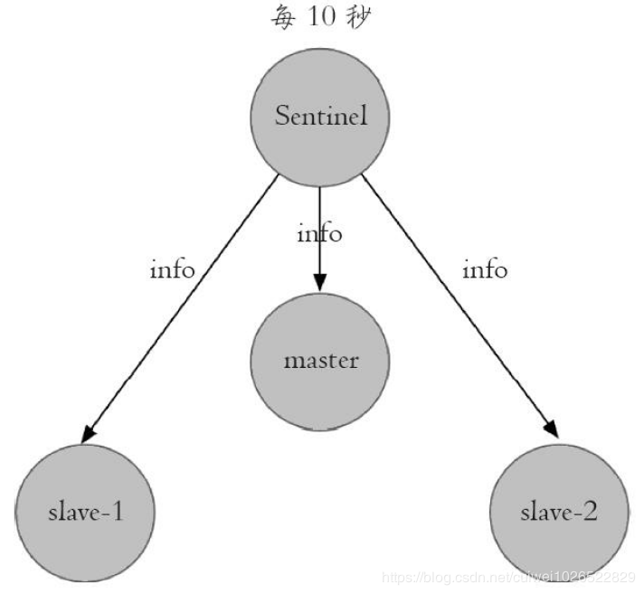
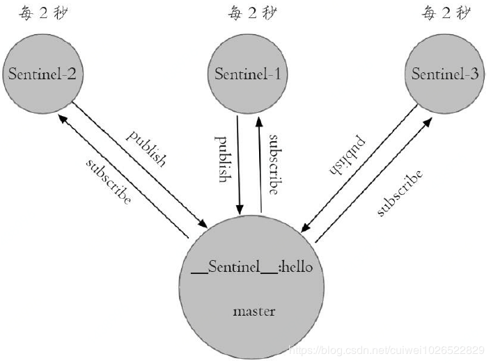
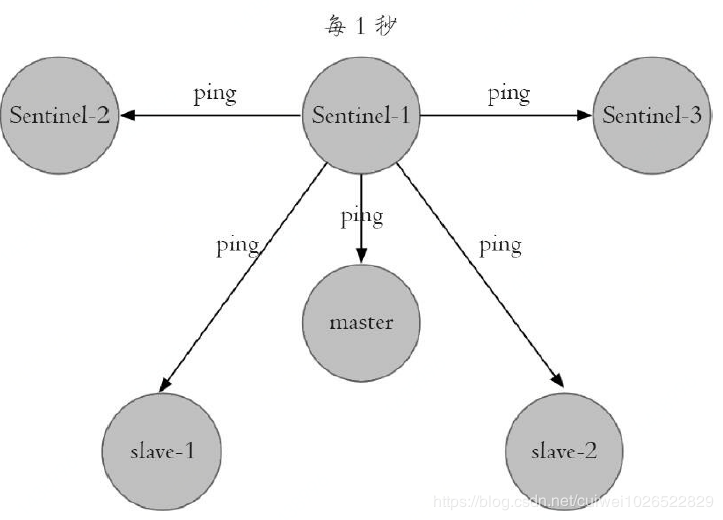
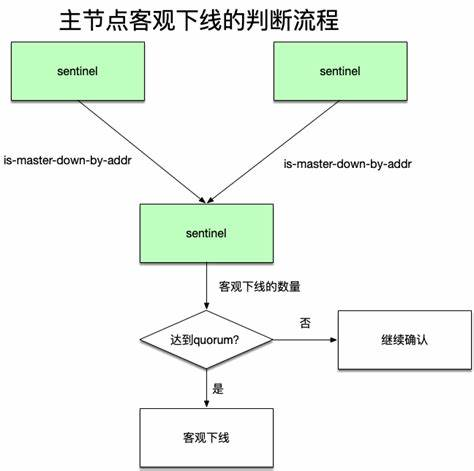
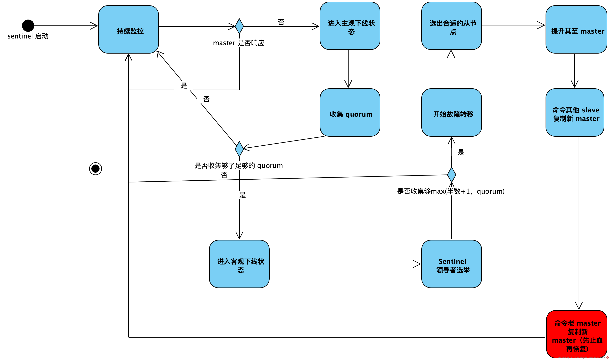

Redis 笔记之十-哨兵 Sentinel
Redis 有若干套高可用实现方案。2.8 开始提供哨兵功能（不要使用更低版本的哨兵，可能有 bug）。
基本概念

主从复制模式的问题
Redis 天然就带有主从复制的功能，但主从复制有若干缺点：
- 需要手工干预，缺乏自动 FO 机制-分布式高可用问题。
- 单机的写能力有限-分布式容量问题。
- 单机的存储能力有限-分布式容量问题。
一个经典的高可用场景
当一个主从集群的 主节点 失效的时候，经典的恢复步骤如下：
- 主节点失效。
- 选出新的从节点，
slaveof no one。 - 先更新应用方的连接。
- 再让其他从节点换主。
- 再把恢复好的主节点作为新的从节点复制新的主节点。
3 和 4 的步骤可以互换。这种需要手工介入的运行机制不能被当作高可用的。而 sentinel 的作用是把这些经典步骤从手工实现为自动。
Sentinel 的高可用性
Sentinel 方案是在原生的 Master-Slave 集群之外加上一个 Sentinel 集群。
每个 Sentinel 节点会监控其他 Sentinel 节点和所有 Redis 节点。任何一个不可达的节点，它都会将其做下线标识。
如果标识的是主节点，它还会：
- 与其他 Sentinel 节点进行“协商”（negotiate），当大多数 Sentinel节点认为主节点都认为主节点不可达时。。
- 会先选举出一个 leader Sentinel 节点来完成自动的 FO 工作。。
- 把集群变化通知 Redis 应用方。

- monitor
- negotiate、vote、self-election
- slaveof no one、slave of new master
- notify client
sentinel 的部署和启动
单个 sentinel 节点的配置文件
1 | |
实际上每个 sentinel 节点的配置文件都可以写成这样，但每个文件必须单独存在，因为 sentinel 文件会在启动时重写各自的配置文件，写入 config-epoch/leader-epoch。
通过域名/容器名，来标定唯一 ip + port 标识的 redis 进程，是容易被忽略的管理集群的方法。这里的配置只配了 master name，通过与 master 协商，可以很快地理解整个 M/S 的拓扑结构。
quorum 是最小结合，而不是陪审团总大小的意思。quorum 达到一半加 1 即客观。要选出 leader sentinel 需要 max(quorum, num(sentinels)/2 + 1)个节点举行选举。
这个文件里有不少的配置都是调大变严格， 调小变宽松，严格的成本比较高。
此外，还有如下有意思的命令：
- sentinel notification-script
：这个命令要求能用 msg=$* 来解析消息格式，如 +sdown master mymaster 127.0.0.1 6379 - sentinel client-reconfig-script
：这个脚本可以接收故障转移结果
这些命令对脚本化运维是很有帮助的。sentinel 本身是角色的，我们可以看到 leader observer sentinel。
启动命令
1 | |
sentinel 本质上只是一种特殊的 Redis 节点。因此可以使用如下的命令查看哨兵的已知信息：
1 | |
sentinel （使用 info 子命令）可以清楚地知道当前监控了多少个集群，集群里有多少个主从节点，一共有几个哨兵节点。

监控多个集群
一套 Sentinel 可以监控多个 Redis 集群，只要准备多套sentinel monitor my_redis_master redis1 6379 3里的 master name my_redis_master 即可。
配置调整
1 | |
需要注意：
- sentinel set 只对当前节点有效。
- sentinel set 命令执行完成以后会立即刷新配置文件，这点和普通节点需要使用
config rewrite。 - 所有节点的配置应该一致。注意 1。
- sentinel 对外不支持 config 命令
部署技巧
- sentinel 节点应该在物理机层面做隔离，这样才客观，能实现真正的高可用。
- sentinel 集群应该有超过 3 个的奇数节点。
- 奇数节点对选举的效果是最优的。
- 可以一套 sentinel 监控多套集群，也可以多套 sentinel 监控多套集群。取舍的时候需要考虑的是：是否 sentinel 节点自身的失败需要被隔离。最佳的方案是：一个业务一套 sentinel。但实践中似乎有些大厂采用多套业务一套 sentinel，在成本和高可用之间，倾向于成本。
API
1 | |
如何实现一个好的客户端
服务端拥有管理元数据的功能，也有通知的功能，也有自动介入的功能。而 client 要同 sentinel 集群保持密切联系，才能保持对 Redis master 的联系。但 sentinel 方案本身并不像 Zookeeper，没有主动广播的机会。
jedis-client 本身是使用 common-pool + 遍历 sentinel 集群各个节点的方式来维持一个 resource 池的。而遍历 sentinel 集群是通过发布-订阅 sentinel 的特有频道来实现的。
实现原理

Sentinel故障转移的原理.xmind
三个定时任务
- 每隔 10s，sentinel 往所有 M/S 发 info 获取最新的拓扑结构
- 从主节点可以实时获知从节点的信息

- 每隔 2s，sentinel 节点会向 Redis 数据节点的 sentinel:hello 频道上发送改 Sentinel 节点对主节点的判断，以及当前 Sentinel 节点的信息。同时每隔 Sentinel 节点也会订阅该频道，来了解其他 Sentinel 节点以及它们对主节点的判断。
- sentinel 可以通过这个频道获取 sentinel 之间的信息
- 交换主节点的状态，可以作为后续客观下线和领导者选举操作的依据：

- 每隔 1s，sentinel 会向M/S和其他 Sentinel 发送一条 ping 命令做一次心跳检测，来确认节点是否可达。

主观下线和客观下线
主观下线（odown）
任意sentinel ping master 超时（sentinel down-after-milliseconds my_redis_master 3000），就可以单节点认为该节点已失败。
任何一个节点进入主观下线状态时，都会使用new_epoch让当前纪元加一。
客观下线（sdown）
sentinel 一进入主观下线状态，就会发送SENTINEL is-master-down-by-addr <masterip> <masterport> <sentinel.current_epoch> * 命令直接询问其他哨兵节点对主节点的判断，当主观下线的 哨兵数量超过

runId等于*时，sentinel 交换的是主节点下线的判定；runId 等于哨兵的runId时，哨兵请求的是其他节点同意它成为领导者。
客观下线必须举行 Sentinel 节点选举
主观下线和客观下线本质上只是对 Redis 主节点的一个状态标记，并不会天然将自己标记为领导者，更不会自动故障转移。
- 确定进入客观状态的 Sentinel 节点会成为一个 candidate，立刻发送一个
SENTINEL is-master-down-by-addr <masterip> <masterport> <sentinel.current_epoch> 自己的 runid - 每个 sentinel 节点在收到该命令的后，如果没有同意过其他 Sentinel 节点的 sentinel is-master-down-by-addr 命令，将同意该请求，否则拒绝（raft 里每个节点每轮选举只能有一票）。
- 发起选举的 Sentinel 要么成为领导者，要么进入下一轮选举（或者恢复到主观下线以前的状态？）。
故障转移
所有的故障转移其实只是执行命令，把手动步骤编程为自动步骤而已。
具体步骤为：
- 在从节点列表中选择一个节点作为新的主节点。因为从节点本身是有状态的，所以实际上是使用综合考虑权重、优先级和一致性的类负载均衡选择算法：
- 过滤不健康节点：主观下线、断线、5s 内没有回复过 Sentinel 的 ping 命令、与主节点失联超过 down-after-miliseconds。
- 选择 slave-priority 最高的节点（如何配置？）。
- 选择偏移量最大的从节点-复制最完整。
- 选择 runid 最小的从节点。
- 对选出的节点发出 slave of no one 命令，从节点升为主节点。
- 对剩下的从节点发出命令，让它们成为主节点的从节点，复制规则和 parallel-sync 参数有关。
- （最后）Sentinel 节点集合会将原来主节点更新为从节点，（这样线上先止血成功），然后持续对其关注，待其恢复后命令其去复制新的主节点。
全流程

节点运维
节点下线
- 临时下线：暂时将节点关掉，之后还会重新启动，继续提供服务。
- 永久下线：将节点关掉不再使用，需要做一些清理工作，如删除配置文件，持久化文件、日志文件。
主节点下线
将一个合适的从节点（如高性能）的 priority 设置为 0。可参考 sentinel 中的 Replicas priority section。
在任意一个 sentinel 上，执行
sentinel failover master-name。
从节点或 sentinel 节点下线
如果使用了读写分离，要确保读写分离机制能够自动感知拓扑结构的变化。
如果只是临时下线（命令下线、kill），sentinel 会对下线节点念念不忘，也就是会不断地对这些节点进行 monitor，浪费硬盘和网络资源，这种时候可以考虑永久下线。
节点上线
从节点上线
配置节点 slave of [masterIp] [masterPort] 让节点上线。master 收到链接后，主从就会自动相互注册发现，而 sentinel 也会自动发现新的从节点。
Sentinel 节点上线
sentinel 只要配了 sentinel monitor，它就会连上 master，进而被 sentinel 网络互相理解发现。